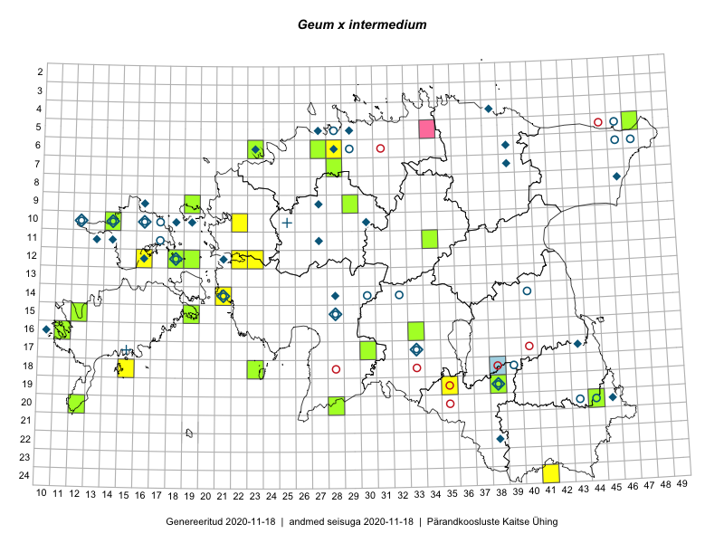

Geum ×intermedium — vahelmine mõõl
Rosaceae :: Geum ×intermedium Ehrh. (98); Geum intermedium Ehrh. (12)

Kaart põhineb 112 kirjel:
vaatlusi 32
herbaareksemplare 78
ELFi kirjeid1 2
Taime kaasaegsed ja ajaloolised leiukohad asuvad 57 ruudus.
Tingmärgid ja ruutude arvud periooditi (U2 / V3 )
█ 2006–2020 (29/–)
◆/◇ 1971–2005 (17/18)
○ 1921–1970 (21/19)
+ kuni 1920 (1/0)
× hävinud (–/0)
? kaheldav (–/0)
| Ruut | Leidja(d) | Leiuaeg | Kirje |
|---|---|---|---|
| 10-12 | Tõnu Ploompuu | 1998-06-18 | ruut/ala: Geum intermedium Ehrh. |
| 10-12 | Haide-Ene Rebassoo | 1957–1984 | ruut/ala: Geum ×intermedium Ehrh. |
| 10-14 | M. Kask | 1970-07-11 | ruut/ala: Geum intermedium Ehrh. |
| 10-14 | Haide-Ene Rebassoo | 1957–1984 | ruut/ala: Geum intermedium Ehrh. |
| 10-16 | Haide-Ene Rebassoo | 1957–1984 | ruut/ala: Geum intermedium Ehrh. |
| 10-17 | Haide-Ene Rebassoo | 1957–1984 | ruut/ala: Geum intermedium Ehrh. |
| 12-18 | Haide-Ene Rebassoo | 1957–1984 | ruut/ala: Geum intermedium Ehrh. |
| 08-46 | Heljo Krall, Liivia Laasimer, Malle Leht | 1982-07-12 | ruut/ala: Geum intermedium Ehrh. |
| 06-29 | H. Salasoo, J. Eplik | 1936-06–1938 | ruut/ala: Geum intermedium Ehrh. |
| 22-38 | M. Kask, L. Viljasoo | 1977-06 | ruut/ala: Geum ×intermedium Ehrh. |
| 12-18 | H. Rebassoo | 1957–1972 | ruut/ala: Geum intermedium Ehrh. |
| 16-10 | Toomas Kukk | 1992 | ruut/ala: Geum ×intermedium Ehrh. |
| 17-33 | L. Viljasoo, M. Leht | 1983-06-15 | ruut/ala: Geum intermedium Ehrh. |
| 20-45 | T. Kukk, T. Ploompuu | 1992-07-06–1998-05-17 | ruut/ala: Geum intermedium Ehrh. |
| 18-15 | Ott Luuk, Elle Roosaluste, Jaak-Albert Metsoja | 2015-06-16 | ruut/ala: Geum ×intermedium Ehrh. |
| 19-35 | Ott Luuk, Hannes Pehlak | 2015-06-12 | ruut/ala: Geum ×intermedium Ehrh. |
| 17-30 | Ott Luuk, Hannes Pehlak | 2015-06-11 | ruut/ala: Geum ×intermedium Ehrh. |
| 20-12 | Triin Reitalu, Sirje Azarov | 2015-05-30 | ruut/ala: Geum ×intermedium Ehrh. |
| 20-12 | Triin Reitalu | 2015-05-30 | ruut/ala: Geum ×intermedium Ehrh. |
| 12-23 | Thea Kull, Eerik Leibak | 2015-08-26 | ruut/ala: Geum ×intermedium Ehrh. |
| 06-28 | Tõnu Ploompuu | 2015-06-06 | ruut/ala: Geum ×intermedium Ehrh. |
| 07-28 | Thea Kull, Meeli Mesipuu | 2016-06-02 | ruut/ala: Geum ×intermedium Ehrh. |
| 10-22 | Tõnu Ploompuu | 2015-05-20–2015-06-03 | ruut/ala: Geum ×intermedium Ehrh. |
| 24-41 | Ott Luuk, Sander Laherand, Susanna Vain | 2016-06-15 | ruut/ala: Geum ×intermedium Ehrh. |
| 24-41 | Sander Laherand, Ott Luuk, Susanna Vain | 2016-06-15 | ruut/ala: Geum ×intermedium Ehrh. |
| 06-28 | Tõnu Ploompuu | 2015-06-06 | ruut/ala: Geum ×intermedium Ehrh. |
| 14-21 | Toomas Kukk | 2009-06-29 | ruut/ala: Geum ×intermedium Ehrh. |
| 12-18 | Toomas Kukk | 2017-06-15 | ruut/ala: Geum ×intermedium Ehrh. |
| 12-18 | Toomas Kukk, Peeter Pärn | 2017-06-15 | ruut/ala: Geum ×intermedium Ehrh. |
| 12-18 | Toomas Kukk, Indrek Tammekänd, Peeter Pärn | 2019-06-01 | ruut/ala: Geum ×intermedium Ehrh. |
| 12-16 | Toomas Kukk, Indrek Tammekänd | 2019-06-03 | ruut/ala: Geum ×intermedium Ehrh. |
| 12-18 | Ott Luuk | 2020-05-31 | ruut/ala: Geum ×intermedium Ehrh. |
| 10-14 | 1971-06-14 | TAA0012903: Geum ×intermedium Ehrh. | |
| 15-28 | Haide-Ene Rebassoo, Alma Saare | 1965-06-16 | TAA0012904: Geum ×intermedium Ehrh. |
| 16-10 | Toomas Kukk | 1991-06-30 | TAA0012907: Geum ×intermedium Ehrh. |
| 05-29 | Toomas Kukk | 1988-06-19 | TAA0012914: Geum ×intermedium Ehrh. |
| 05-29 | Toomas Kukk | 1988-06-19 | TAA0012915: Geum ×intermedium Ehrh. |
| 19-38 | Gustav Vilbaste | 1931-06-22 | TAA0012916: Geum ×intermedium Ehrh. |
| 14-21 | Toomas Kukk | 2005-06-27 | TAA0012919: Geum ×intermedium Ehrh. |
| 10-16 | Haide-Ene Rebassoo | 1971-06-06 | TAA0012930: Geum ×intermedium Ehrh. |
| 11-17 | Heljo Karu, Haide-Ene Rebassoo | 1956-06-22 | TAA0012935: Geum ×intermedium Ehrh. |
| 12-18 | Haide-Ene Rebassoo | 1956-06-23 | TAA0012936: Geum ×intermedium Ehrh. |
| 17-33 | Karl Eichwald | 1930-06-04 | TAA0012938: Geum ×intermedium Ehrh. |
| 14-30 | Maret Kask | 1965-06-16 | TAA0012940: Geum ×intermedium Ehrh. |
| 20-44 | Linda Viljasoo | 1957-06-17 | TAA0012941: Geum ×intermedium Ehrh. |
| 19-38 | Maret Kask, Linda Viljasoo | 1979-06-01 | TAA0012945: Geum ×intermedium Ehrh. |
| 14-21 | Agnes Ojaveer | 1957-06-21 | TAA0012946: Geum ×intermedium Ehrh. |
| 14-21 | Agnes Ojaveer | 1957-06-21 | TAA0012947: Geum ×intermedium Ehrh. |
| 05-28 | Hugo Sogenbits | 1926-06-10 | TAA0012948: Geum ×intermedium Ehrh. |
| 19-38 | Maret Kask, Linda Viljasoo | 1979-06-01 | TAA0012952: Geum ×intermedium Ehrh. |
| 18-39 | Linda Viljasoo | 1962-06-13 | TAA0012953: Geum ×intermedium Ehrh. |
| 10-19 | Malle Leht | 1982-06-17 | TAA0012954: Geum ×intermedium Ehrh. |
| 06-46 | Gustav Vilbaste | 1929-06-25 | TAA0012958: Geum ×intermedium Ehrh. |
| 06-46 | Gustav Vilbaste | 1929-06-25 | TAA0012962: Geum ×intermedium Ehrh. |
| 17-33 | Malle Leht | 1983-06-15 | TAA0012966: Geum ×intermedium Ehrh. |
| 17-15 | R. Lehbert | 1900-06-10 | TAM0060323: Geum ×intermedium Ehrh. |
| 11-27 | Õie Jaagomäe | 1980-06-13 | TAM0026765: Geum ×intermedium Ehrh. |
| 11-27 | Õie Jaagomäe | 1980-06-13 | TAM0026766: Geum ×intermedium Ehrh. |
| 10-30 | J.-M. Habicht | 1998-05-21 | TAM0028452: Geum ×intermedium Ehrh. |
| 17-43 | J.-M. Habicht | 1996-06-18 | TAM0028453: Geum ×intermedium Ehrh. |
| 05-27 | Uve Ramst | 1994-06-08 | TAM0028456: Geum ×intermedium Ehrh. |
| 05-29 | Heinrich Aasamaa | 1996-07-07 | TAM0088503: Geum ×intermedium Ehrh. |
| 05-29 | Heinrich Aasamaa | 1996-07-07 | TAM0088505: Geum ×intermedium Ehrh. |
| 20-43 | Salme Kask | 1957-06-17 | TAA0012924: Geum ×intermedium Ehrh. |
| 15-12 | Peedu Saar, Thea Kull | 2015-06-30 | TAA0135232: Geum ×intermedium Ehrh. |
| 05-47 | Jana-Maria Habicht | 2012-05-27 | TAM0121340: Geum ×intermedium Ehrh. |
| 16-11 | Uve Ramst | 2011-06-15 | TAM0122020: Geum ×intermedium Ehrh. |
| 18-23 | Silvia Pihu | 2015-05-30 | TU309713: Geum ×intermedium Ehrh. |
| 09-19 | J.-M. Habicht | 2012-06-16 | TAM0126914: Geum ×intermedium Ehrh. |
| 19-38 | J.-M. Habicht | 2012-06-08 | TAM0126915: Geum ×intermedium Ehrh. |
| 09-27 | H. Aasamaa | 1996-07-28 | TAM0127100: Geum ×intermedium Ehrh. |
| 09-27 | H. Aasamaa | 1996-07-28 | TAM0127102: Geum ×intermedium Ehrh. |
| 20-44 | Peedu Saar, Tarmo Niitla | 2016-06-15 | TAA0132934: Geum ×intermedium Ehrh. |
| 20-28 | Peedu Saar, Ott Luuk | 2016-06-09 | TAA0132935: Geum ×intermedium Ehrh. |
| 10-14 | Thea Kull | 2015-06-14 | TAA0113667: Geum ×intermedium Ehrh. |
| 09-29 | Thea Kull, Ott Luuk | 2016-05-30 | TAA0133496: Geum ×intermedium Ehrh. |
| 07-28 | Thea Kull, Meeli Mesipuu | 2016-06-02 | TAA0133500: Geum ×intermedium Ehrh. |
| 16-33 | Maria Abakumova | 2015-06-30 | TAA0119973: Geum ×intermedium Ehrh. |
| 20-12 | Triin Reitalu, Sirje Azarov | 2015-05-31 | TAA0140144: Geum ×intermedium Ehrh. |
| 20-12 | Triin Reitalu, Sirje Azarov | 2015-05-31 | TAA0140145: Geum ×intermedium Ehrh. |
| 06-23 | Ott Luuk, Mari Metsoja | 2015-06-04 | TAA0139123: Geum ×intermedium Ehrh. |
| 06-27 | Kadri Järv | 2011-05-13 | TAM0135671: Geum ×intermedium Ehrh. |
| 12-18 | Toomas Kukk | 2017-06-15 | TAA0142234: Geum ×intermedium Ehrh. |
| 12-18 | Toomas Kukk | 2017-06-15 | TAA0142235: Geum ×intermedium Ehrh. |
| 12-18 | Toomas Kukk | 2017-06-15 | TAA0142239: Geum ×intermedium Ehrh. |
| 11-34 | Ott Luuk, Hannes Pehlak | 2015-06-08 | TAA0145879: Geum ×intermedium Ehrh. |
| 11-34 | Ott Luuk, Hannes Pehlak | 2015-06-08 | TAA0145880: Geum ×intermedium Ehrh. |
| 17-30 | Ott Luuk, Hannes Pehlak | 2015-06-11 | TAA0145937: Geum ×intermedium Ehrh. |
| 17-30 | Ott Luuk, Hannes Pehlak | 2015-06-11 | TAA0145938: Geum ×intermedium Ehrh. |
| 12-19 | Toomas Kukk, Ilmar Uibopuu, Mari Reitalu | 2018-05-27 | TAA0147033: Geum ×intermedium Ehrh. |
| 12-18 | Indrek Tammekänd, Toomas Kukk, Peeter Pärn | 2019-06-01 | TAA0152034: Geum intermedium Ehrh. |
| 06-47 | Gustav Vilbaste | 1929-06-23 | TAA0012920: Geum ×intermedium Ehrh. |
| 14-32 | Maret Kask | 1965-06-15 | TAA0012931: Geum ×intermedium Ehrh. |
| 14-40 | Maret Kask | 1967-07-08 | TAA0012943: Geum ×intermedium Ehrh. |
| 19-38 | Timmi | 1953-06-13 | TAA0012950: Geum ×intermedium Ehrh. |
| 05-46 | Gustav Vilbaste | 1929-06-19 | TAA0012959: Geum ×intermedium Ehrh. |
| 05-46 | Gustav Vilbaste | 1929-06-19 | TAA0012960: Geum ×intermedium Ehrh. |
| 05-46 | Gustav Vilbaste | 1929-06-19 | TAA0012961: Geum ×intermedium Ehrh. |
| 06-46 | Gustav Vilbaste | 1929-06-25 | TAA0012963: Geum ×intermedium Ehrh. |
| 06-46 | Gustav Vilbaste | 1929-06-25 | TAA0012964: Geum ×intermedium Ehrh. |
| 06-46 | Gustav Vilbaste | 1929-06-25 | TAA0012965: Geum ×intermedium Ehrh. |
| 19-38 | Gustav Vilberg-Vilbaste | 1931-06-22 | TAA0012917: Geum ×intermedium Ehrh. |
| 19-38 | Gustav Vilberg-Vilbaste | 1931-06-22 | TAA0012918: Geum ×intermedium Ehrh. |
| 06-47 | Gustav Vilberg-Vilbaste | 1929-06-23 | TAA0012921: Geum ×intermedium Ehrh. |
| 06-47 | Gustav Vilberg-Vilbaste | 1929-06-23 | TAA0012922: Geum ×intermedium Ehrh. |
| 14-32 | Maret Kask | 1965-06-15 | TAA0012932: Geum ×intermedium Ehrh. |
| 14-32 | Maret Kask | 1965-06-15 | TAA0012933: Geum ×intermedium Ehrh. |
| 14-40 | Maret Kask | 1967-07-08 | TAA0012944: Geum ×intermedium Ehrh. |
| 06-46 | Gustav Vilbaste | 1929-06-25 | TAA0153268: Geum ×intermedium Ehrh. |
| 19-38 | Gustav Vilbaste | 1931-06-22 | TAA0012916: Geum ×intermedium Ehrh. |
| 06-33 | Vallo Valdmann, Ene Valdmann | 2010-09-21 | ELF: 22191 |
| 18-38 | Rein Kuresoo | 2010-10-22 | ELF: 22739 |
Eestimaa Looduse Fondi (ELF) andmebaas sisaldab inventeeritud koosluste kirjeldusi ja liigiloendeid. Eriti rohkesti on andmeid märgalade kohta.↩︎
Ruutude arv uue atlase andmekogu järgi. Muuhulgas arvestab vanemat herbaariumi, 2005. aasta atlase välitöölehtedelt uuesti digitaliseeritud andmeid jne. Uue atlase andmekogust pärinevad andmed on kaardile kantud siniste sümbolitega.↩︎
Ruutude arv 2005. aasta atlase (Kukk, T., Kull, T., Eesti taimede levikuatlas. Eesti Maaülikool, Põllumajandus- ja Keskkonnainstituut, Tartu, 2005) järgi. Andmeallikana on kasutatud levik.exe programmi, kus igas ruudus on registreeritud vaid uusim leid. Seetõttu on vanemate perioodide kohta andmed puudulikud. Kasutatud levik.exe andmestikus leidub mõningaid kõrvalekaldeid atlase trükis ilmunud versioonist, sagedamini tarnade ja käpaliste seas. Lisaks leidub selles andmestikus valik liike (peamiselt väheste leidudega tulnuktaimed), mille kaarte trükis ei avaldatud. Vana atlase andmed ruutudest, milles ei ole uue atlase andmekogus leide enne 2006. aastat, on kaardil esitatud punaste sümbolitega. Vana atlase andmetel hävinud ja kaheldavaid leiukohti pole hilisemate (taas)leidude põhjal korrigeeritud.↩︎